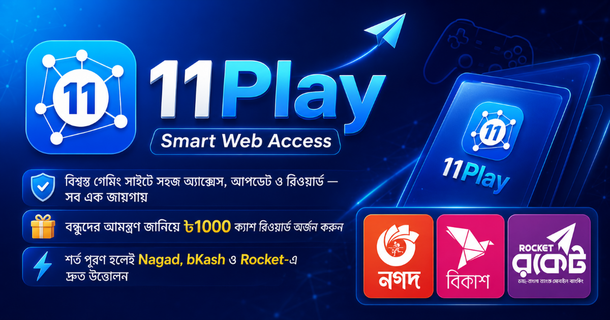

11Play Self-Review
11Play রিভিউ ২০২৬: ফিচার, নিরাপত্তা, স্বচ্ছতা ও ব্যবহারযোগ্যতার স্ব-মূল্যায়ন
11Play-এর বর্তমান কনটেন্ট, static review system, মোবাইল অভিজ্ঞতা, Google-connected profile, 500 BDT Offer, Live Chat, নিরাপত্তা, SEO, শক্তি এবং সীমাবদ্ধতা নিয়ে এই স্বচ্ছ সম্পাদকীয় স্ব-মূল্যায়ন প্রকাশ করা হয়েছে।

স্ব-মূল্যায়ন সম্পর্কে স্পষ্ট ঘোষণা
এই রিভিউটি 11Play নিজেই নিজের ওয়েবসাইট সম্পর্কে প্রকাশ করেছে। এটি কোনো স্বাধীন তৃতীয়-পক্ষের রিভিউ নয়। সম্ভাব্য স্বার্থসংঘাত এড়াতে শক্তির পাশাপাশি বর্তমান সীমাবদ্ধতা, অসম্পূর্ণ অংশ এবং উন্নয়নের ক্ষেত্রগুলোও স্পষ্টভাবে উল্লেখ করা হয়েছে।
11Play অভ্যন্তরীণ মূল্যায়ন
11Play সম্পর্কে সংক্ষিপ্ত পরিচিতি
11Play একটি mobile-focused Smart Web Access platform। এর লক্ষ্য হলো ব্যবহারকারীদের জন্য তথ্য, entertainment-oriented content, website review, Google-connected account services, promotional Offer এবং support feature একটি সংগঠিত interface-এর মধ্যে উপস্থাপন করা।
সাইটের review system-এ প্রতিটি পর্যালোচনা আলাদা static HTML page হিসেবে প্রকাশিত হয়। ফলে প্রতিটি review সরাসরি URL দিয়ে খোলা যায় এবং search engine আলাদাভাবে page crawl ও index করতে পারে।
11Play-এ প্রকাশিত third-party website review কোনো সংশ্লিষ্ট website-এর মালিকানা, পরিচালনা বা নিশ্চয়তা বোঝায় না। প্রতিটি third-party service তার নিজস্ব শর্ত, নিরাপত্তা ও পরিচালনার জন্য আলাদাভাবে দায়ী।
এই স্ব-মূল্যায়নের উদ্দেশ্য
নিজেদের website সম্পর্কে নিজেদের review প্রকাশ করলে স্বাভাবিকভাবেই পক্ষপাতের প্রশ্ন আসে। তাই এই পৃষ্ঠার উদ্দেশ্য শুধু প্রচারণা নয়।
এর উদ্দেশ্য হলো:
- 11Play কী ধরনের platform তা স্পষ্ট করা।
- বর্তমান feature এবং architecture সম্পর্কে ধারণা দেওয়া।
- শক্তিশালী দিকের পাশাপাশি সীমাবদ্ধতা প্রকাশ করা।
- ব্যবহারকারীর তথ্য ও নিরাপত্তা নিয়ে অবস্থান পরিষ্কার করা।
- ভবিষ্যৎ উন্নয়নের অগ্রাধিকার প্রকাশ করা।
11Play-এর প্রধান বিভাগ
11Play একটি single-page application বা SPA-ভিত্তিক মূল interface ব্যবহার করে। এর পাশাপাশি review ও legal content-এর জন্য static HTML page রয়েছে।
প্রকল্পের বর্তমান কাঠামোতে উল্লেখযোগ্য বিভাগগুলো হলো:
- Home বা প্রধান content section।
- News বা তথ্যভিত্তিক section।
- Casino বা entertainment-related content section।
- Profile ও Account Information।
- Invite Your Friend।
- 500 BDT New User Offer।
- Live Chat।
- Favorites এবং History।
- Static Website Reviews।
Admin side-এ user listing, user detail এবং Offer Paid status পরিচালনার জন্য আলাদা protected interface রয়েছে।
Static Review System
11Play-এর গুরুত্বপূর্ণ feature-এর একটি হলো static review publishing system। প্রতিটি review নিচের ধরনের আলাদা URL ব্যবহার করে:
/reviews/sites/site-slug/
প্রতিটি review page-এ title, description, canonical URL, Open Graph information, structured data, rating, banner image এবং detailed content রাখা হয়।
Static review ব্যবস্থার সুবিধা
- প্রতিটি review-এর আলাদা URL।
- JavaScript ছাড়াও মূল content HTML source-এ থাকে।
- search engine সহজে crawl করতে পারে।
- social sharing-এর জন্য আলাদা preview image থাকে।
- sitemap build process-এর মাধ্যমে update করা যায়।
- review listing page-এ client-side search করা যায়।
Review index ও search experience
11Play-এর review listing একটি search-engine-style ফলাফল layout অনুসরণ করে। প্রতিটি result-এ site name, title, rating, description, update date এবং review link দেখানো হয়।
Search field ব্যবহার করে user review title, site name, description বা keyword দিয়ে প্রয়োজনীয় review খুঁজে পেতে পারেন।
review result build-এর সময় static HTML হিসেবে তৈরি হওয়ায় search engine শুধু JavaScript execution-এর ওপর নির্ভর করে না।
SEO কাঠামো
11Play-এর review pages-এ search engine visibility উন্নত করার জন্য কয়েকটি গুরুত্বপূর্ণ ব্যবস্থা রাখা হয়েছে।
- প্রতিটি review-এর unique title।
- আলাদা meta description।
- canonical URL।
- Open Graph metadata।
- Twitter preview metadata।
- Review structured data।
- Breadcrumb structured data।
- XML sitemap integration।
- internal linking।
- static source content।
SPA route ও static page-এর পার্থক্য
11Play-এর মূল application-এ
#home,
#news,
#profile,
#offer বা
#live-chat-এর মতো URL
fragment ব্যবহার হতে পারে।
এসব fragment browser-এর ভেতরে section navigation পরিচালনা করে, কিন্তু server-এর কাছে আলাদা page request হিসেবে যায় না। তাই এগুলো review-এর static URL-এর মতো আলাদা crawlable document নয়।
গুরুত্বপূর্ণ public content-এর জন্য static page ব্যবহার করা SEO-এর দিক থেকে তুলনামূলকভাবে পরিষ্কার ব্যবস্থা।
মোবাইল ব্যবহারযোগ্যতা
11Play mobile-first অভিজ্ঞতাকে গুরুত্ব দেয়। Navigation, account page, review listing এবং বিস্তারিত review ছোট screen-এ ব্যবহারযোগ্য রাখার লক্ষ্য রয়েছে।
মোবাইল ব্যবহারে গুরুত্বপূর্ণ দিক:
- responsive layout।
- touch-friendly navigation।
- readable font size।
- horizontal overflow কমানো।
- সহজ back navigation।
- responsive review banner।
- mobile-friendly profile ও Offer interface।
Web application experience
11Play browser-based web application হিসেবে তৈরি হয়েছে এবং manifest ও mobile-oriented interface-এর মাধ্যমে app-like অভিজ্ঞতা দেওয়ার চেষ্টা করে।
বর্তমান web production architecture-এর মূল লক্ষ্য হলো static hosting, lightweight JavaScript এবং Firebase account services-এর মধ্যে ভারসাম্য রাখা।
repository-তে বিদ্যমান APK আলাদা deferred phase-এর অংশ। বর্তমান web hardening কাজ APK rebuild বা account qualification-এর ওপর নির্ভরশীল নয়।
Profile ও Account Information
11Play-এর current account area verified Google Sign-In-এর মাধ্যমে ব্যক্তিগত profile তৈরি ও প্রদর্শনের ব্যবস্থা ব্যবহার করে।
বর্তমান profile information-এর মধ্যে উল্লেখযোগ্য বিষয়:
- user name।
- Google profile photo।
- verified Gmail information।
- Gmail local part থেকে username।
- Bangladesh mobile number।
- registration date।
- last login।
- account status।
বর্তমান profile data contract Schema Version 4-এর সঙ্গে সমন্বিত এবং Firestore Security Rules দ্বারা protected।
Google Sign-In ও guest experience
11Play-এর protected account feature ব্যবহারের জন্য verified Google Sign-In প্রয়োজন। Google account-এর name, verified email এবং profile photo যেখানে পাওয়া যায় সেখানে profile interface-এ ব্যবহার করা হয়।
Guest user public content browse করতে পারেন। ব্যক্তিগত profile data access বা protected account operation-এর জন্য authenticated Google account প্রয়োজন।
11Play Google password গ্রহণ বা সংরক্ষণ করে না। Google এবং Firebase Authentication sign-in process পরিচালনা করে।
Invite Your Friend
বর্তমান Invite Your Friend feature একটি সাধারণ sharing feature। এটি official 11Play website ও promotional information share করতে ব্যবহার করা হয়।
বর্তমান sharing model-এর গুরুত্বপূর্ণ বিষয়:
- official canonical website URL share করা হয়।
- personal referral code তৈরি হয় না।
-
?ref=tracking parameter প্রয়োজন হয় না। - account-to-account referral attribution তৈরি হয় না।
- sharing থেকে referral reward বা wallet balance তৈরি হয় না।
- current promotional Offer-এর information share করা যেতে পারে।
500 BDT New User Offer
বর্তমান 11Play promotional flow-এর প্রধান feature হলো eligible নতুন user-এর জন্য 500 BDT Offer।
Offer process সাধারণভাবে:
- প্রথমে 11Play Live Chat-এ যোগাযোগ।
- applicable target-site link ও instruction গ্রহণ।
- supplied link দিয়ে registration।
- applicable target requirements সম্পন্ন করা।
- প্রয়োজন হলে target service-এর verification সম্পন্ন করা।
- আবার 11Play Live Chat-এ ফিরে Offer review চাওয়া।
- successful manual review-এর পর Offer প্রদান।
Offerটি automatic referral reward, gaming winning বা 11Play wallet balance হিসেবে উপস্থাপন করা হয় না।
Offer Paid Administration
11Play Admin Dashboard-এ current promotional Offer-এর জন্য protected Offer Paid status রাখার ব্যবস্থা রয়েছে।
Offer Paid architecture-এর গুরুত্বপূর্ণ বিষয়:
- Offer status user profile থেকে আলাদা protected record।
- সাধারণ user নিজের Offer Paid status read করতে পারেন না।
- সাধারণ user Offer Paid record create বা modify করতে পারেন না।
- authorized Admin Offer প্রদান করার পর Paid mark করতে পারেন।
- paid record-এ Admin identity এবং timestamp রাখা যেতে পারে।
- normal Admin workflow-এ Paid state reverse করার action রাখা হয়নি।
Live Chat Support
Live Chat current 11Play Offer process এবং user support journey-এর গুরুত্বপূর্ণ অংশ।
ব্যবহারকারী Live Chat ব্যবহার করতে পারেন:
- 500 BDT Offer শুরু করার জন্য।
- target link ও instruction জানতে।
- Offer completion review চাইতে।
- account বা profile-related support নিতে।
- technical problem জানাতে।
support কখনো Google password, wallet PIN, banking password, OTP বা recovery code চাওয়া উচিত নয়।
Mobile number ও one-time lock
signed-in user নিজের profile-এ একটি valid Bangladesh mobile number যোগ করতে পারেন।
বর্তমান mobile model-এর প্রধান নিয়ম:
- accepted format +8801XXXXXXXXX।
- mobile profile-এর অংশ হিসেবে সংরক্ষিত হয়।
- successful save-এর পর mobile locked হয়।
- ordinary user পরে mobile পরিবর্তন বা remove করতে পারেন না।
- একই mobile number একাধিক আলাদা profile-এ থাকতে পারে।
- stored mobile-কে SIM ownership-এর প্রমাণ হিসেবে উপস্থাপন করা হয় না।
current model global mobile uniqueness বা referral qualification-এর ওপর নির্ভর করে না।
Admin access ও নিরাপত্তা
11Play-এর admin policy অনুযায়ী একটি নির্দিষ্ট verified Google account-কে administrative access দেওয়া হয়।
সাধারণ user যেন admin dashboard দেখতে বা ব্যবহার করতে না পারেন, সে জন্য authentication এবং authorization উভয় স্তরে access control প্রয়োজন।
- verified Google Sign-In।
- configured Admin email যাচাই।
- non-admin user block করা।
- direct admin URL protection।
- private user data সীমিত রাখা।
- Firestore Security Rules ব্যবহার।
- Offer Paid data Admin-only রাখা।
Firebase ও data security
11Play account feature-এর জন্য Firebase Authentication এবং Cloud Firestore ব্যবহার করে।
Firebase ব্যবহার করলেই application স্বয়ংক্রিয়ভাবে নিরাপদ হয়ে যায় না। Firestore Security Rules, authenticated access, field validation এবং Admin permission সঠিকভাবে configure করা প্রয়োজন।
বর্তমান protected data-এর মধ্যে বিশেষভাবে গুরুত্বপূর্ণ:
- user profile data।
- verified Gmail identity।
- email association।
- locked mobile number।
- account status।
- Admin-only Offer Paid status।
বর্তমান production account architecture Firebase Spark plan-এ direct Firestore access ব্যবহার করে এবং normal operation-এর জন্য deployed Cloud Functions প্রয়োজন হয় না।
Privacy ও data transparency
11Play-এর Privacy Policy বর্তমান account ও Offer architecture-এর সঙ্গে সমন্বিত রাখা গুরুত্বপূর্ণ।
বর্তমান policy-তে অন্তত নিচের বিষয়গুলো পরিষ্কার থাকা প্রয়োজন:
- Google account data ব্যবহার।
- verified Gmail identity।
- profile information।
- mobile number storage ও lock।
- registration এবং last-login information।
- cookies বা local storage।
- analytics service।
- Admin-only Offer Paid data।
- data-related support request।
Accessibility
11Play-এর review pages-এ semantic HTML, heading structure, skip link, navigation label, image alt text, time element এবং keyboard-friendly link ব্যবহারের চেষ্টা করা হয়েছে।
ভবিষ্যৎ উন্নয়নের জন্য প্রয়োজন:
- keyboard-only testing।
- screen-reader testing।
- color contrast audit।
- focus indicator review।
- form error announcement।
- motion reduction support।
Performance
Vanilla JavaScript এবং static HTML ব্যবহার করার কারণে 11Play-এর কিছু page তুলনামূলক lightweight রাখা সম্ভব।
তবে বড় JavaScript bundle, অপ্রয়োজনীয় CSS, unoptimized image, duplicate module এবং excessive Firebase request performance কমিয়ে দিতে পারে।
নিয়মিত performance review-এর মধ্যে থাকা উচিত:
- image compression।
- WebP ব্যবহার।
- lazy loading।
- unused CSS review।
- obsolete script cleanup।
- Firebase request review।
- Lighthouse testing।
Editorial transparency
11Play-এর review content বিশ্বাসযোগ্য রাখতে review-এর উৎস, যাচাইয়ের তারিখ, পরিবর্তনশীল তথ্য এবং সীমাবদ্ধতা স্পষ্ট করা জরুরি।
কোনো third-party site-এর marketing claim স্বাধীনভাবে যাচাই করা সম্ভব না হলে সেটিকে নিশ্চিত সত্য হিসেবে লেখা উচিত নয়।
affiliate relationship, sponsorship বা paid placement থাকলে তা review-এর শুরুতেই প্রকাশ করা প্রয়োজন।
Third-party review-এর সীমা
11Play কোনো third-party website-এর operator, regulator বা payment provider নয়। তাই third-party site-এর account, payment, withdrawal, KYC বা customer support সরাসরি নিয়ন্ত্রণ করতে পারে না।
11Play-এর review কোনো third-party platform-এর নিরাপত্তা সনদ, আইনগত অনুমোদন, আর্থিক নিশ্চয়তা বা লাভের প্রতিশ্রুতি নয়।
অভ্যন্তরীণ রেটিং বিশ্লেষণ
| মূল্যায়নের ক্ষেত্র | অভ্যন্তরীণ স্কোর | সংক্ষিপ্ত মন্তব্য |
|---|---|---|
| Review content structure | 4.3/5 | বিস্তারিত static review ও পরিষ্কার section structure |
| SEO architecture | 4.3/5 | static URL, metadata, structured data ও sitemap |
| Mobile usability | 4.0/5 | mobile-focused layout, তবে নিয়মিত device testing দরকার |
| Transparency | 4.2/5 | disclosure ও limitation উল্লেখের কাঠামো রয়েছে |
| Account feature maturity | 4.0/5 | Google profile, mobile lock, Offer ও Admin integration বর্তমানে সুসংগঠিত |
| Privacy documentation | 4.0/5 | বর্তমান account ও Offer architecture অনুযায়ী policy সমন্বিত |
| Overall self-assessment | 4.0/5 | শক্ত ভিত্তি রয়েছে, তবে production validation ও independent testing গুরুত্বপূর্ণ |
11Play-এর প্রধান শক্তি
ইতিবাচক দিক
- প্রতিটি review-এর আলাদা static HTML page।
- Google-friendly review URL।
- automated review index build।
- sitemap integration।
- mobile-focused interface।
- verified Google profile ও one-time mobile lock।
- 500 BDT Offer ও Live Chat flow।
- Admin-only Offer Paid separation।
- verified Admin access policy।
- বাংলা ভাষায় বিস্তারিত content।
বর্তমান সীমাবদ্ধতা
- এই review স্বাধীন নয়; এটি নিজস্ব স্ব-মূল্যায়ন।
- SPA fragment আলাদা static page হিসেবে index হয় না।
- Offer handling-এর একটি অংশ manual support process-এর ওপর নির্ভরশীল।
- browser-only architecture কিছু technical limitation বহন করে।
- independent security audit প্রয়োজন।
- বৃহৎ review index ভবিষ্যতে pagination প্রয়োজন করতে পারে।
- third-party তথ্য নিয়মিত পুনরায় যাচাই করতে হবে।
ভবিষ্যৎ উন্নয়নের অগ্রাধিকার
- Google profile, mobile lock এবং Offer flow-এর production E2E validation।
- Firestore Security Rules-এর emulator test নিয়মিত চালানো।
- Admin Offer Paid flow production validation।
- independent security testing।
- accessibility audit।
- automated broken-link check।
- review update history আরও শক্তিশালী করা।
- editorial source ও verification note আরও উন্নত করা।
- বড় review collection-এর জন্য pagination বা category filter।
- গুরুত্বপূর্ণ SPA section-এর জন্য static URL প্রয়োজন কি না তা মূল্যায়ন করা।
11Play কি সম্পূর্ণ স্বাধীন review platform?
Third-party website নিয়ে প্রকাশিত review স্বাধীন সম্পাদকীয় মূল্যায়ন হিসেবে প্রস্তুত করার লক্ষ্য রয়েছে। তবে কোনো review-এ affiliate, sponsor বা commercial relationship থাকলে তা স্পষ্টভাবে প্রকাশ করা প্রয়োজন।
এই নির্দিষ্ট 11Play review স্বাধীন নয়, কারণ এটি 11Play নিজেই প্রকাশ করেছে। তাই এই page-কে external reputation বা independent endorsement হিসেবে ব্যবহার করা উচিত নয়।
11Play-এর চূড়ান্ত স্ব-মূল্যায়ন
11Play-এর শক্তিশালী দিক হলো modular application structure, mobile-focused interface, verified Google profile architecture এবং search-engine-friendly static review publishing system।
প্রতিটি review-এর আলাদা HTML page, metadata, canonical URL, structured data এবং sitemap integration ভবিষ্যতে একটি সংগঠিত বাংলা review library তৈরি করতে সহায়তা করতে পারে।
একই সঙ্গে production validation, independent security testing, Offer support workflow, accessibility, editorial source verification এবং SPA content-এর crawlability নিয়মিত পর্যালোচনা করা প্রয়োজন।
এসব শক্তি ও সীমাবদ্ধতা বিবেচনায় 11Play-এর অভ্যন্তরীণ স্ব-মূল্যায়ন 4.0/5।
এটি স্বাধীন তৃতীয়-পক্ষের রেটিং নয়। ব্যবহারকারীর বাস্তব feedback, independent technical audit এবং ভবিষ্যৎ release-এর ফলাফলের ভিত্তিতে এই rating পরিবর্তিত হতে পারে।
গুরুত্বপূর্ণ তথ্য
এই স্ব-মূল্যায়ন সম্পর্কে যা জানা প্রয়োজন
এই page 11Play নিজেই নিজের website সম্পর্কে প্রকাশ করেছে। তাই এটিকে independent endorsement হিসেবে বিবেচনা করা উচিত নয়।
Self-review disclosure
Review author এবং reviewed website একই প্রতিষ্ঠান।
সীমাবদ্ধতা প্রকাশ
শক্তির পাশাপাশি বর্তমান সীমাবদ্ধতা ও উন্নয়নের ক্ষেত্র উল্লেখ করা হয়েছে।
নিয়মিত আপডেট
feature ও policy পরিবর্তিত হলে review update করা প্রয়োজন।
অভ্যন্তরীণ রেটিং
4.0/5 rating স্বাধীন তৃতীয়-পক্ষের score নয়।
তথ্যগত ঘোষণা
এই self-review 11Play-এর নিজস্ব সম্পাদকীয় মূল্যায়ন। এটি স্বাধীন endorsement, security certification, financial advice বা third-party verification নয়।
সাধারণ প্রশ্ন
11Play সম্পর্কে সাধারণ জিজ্ঞাসা
11Play কী?
11Play একটি mobile-focused Smart Web Access platform যেখানে তথ্য, review, entertainment-oriented content, Google-connected profile, promotional Offer এবং support feature সংগঠিতভাবে উপস্থাপন করা হয়।
এই review কি স্বাধীন?
না। এটি 11Play-এর নিজস্ব সম্পাদকীয় self-review। Review author এবং reviewed website একই প্রতিষ্ঠান।
11Play-এর অভ্যন্তরীণ rating কত?
11Play-এর নিজস্ব স্ব-মূল্যায়ন 4.0/5। এটি independent third-party rating নয়।
11Play-এর review কেন static HTML?
Static HTML ব্যবহারে প্রতিটি review-এর আলাদা crawlable URL, source content, metadata, structured data এবং sitemap entry রাখা যায়।
11Play কি third-party website পরিচালনা করে?
না। Review করা third-party website তাদের নিজস্ব operator দ্বারা পরিচালিত। 11Play তাদের account, payment, withdrawal বা support নিয়ন্ত্রণ করে না।
11Play-এর বর্তমান account feature কী?
বর্তমান account system verified Google Sign-In, personal profile, Gmail identity, Google profile photo, username, Bangladesh mobile number, one-time mobile lock, registration date এবং last login সমর্থন করে।
11Play-এর বর্তমান promotional feature কী?
বর্তমান promotional feature হলো eligible নতুন user-এর জন্য 500 BDT Offer। Offer শুরু করতে প্রথমে Live Chat ব্যবহার করে applicable link ও instruction নেওয়া হয়।
11Play-এর rating কি পরিবর্তিত হবে?
হ্যাঁ। নতুন feature, security audit, user feedback, performance এবং policy update-এর ভিত্তিতে rating পরিবর্তিত হতে পারে।